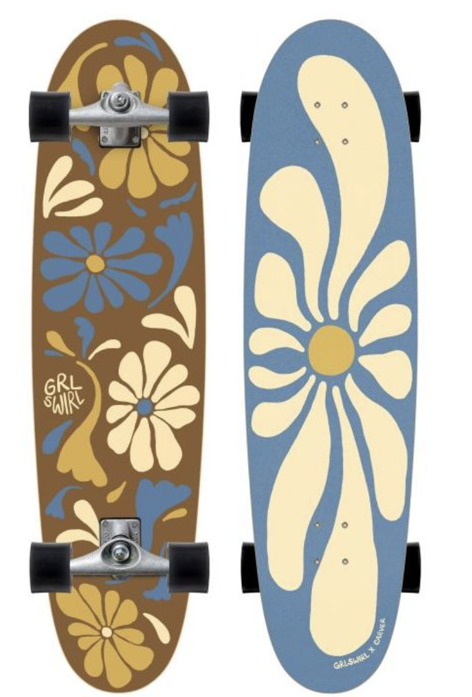

Cruising & CarvingCarver C7
The grandfather of surfskate trucks. Features a dual-axis spring-loaded front arm. Emulates the flowing, flowing feel of single-fin retro boards or longboards.
Truck System
Carver C7
Responsiveness
Smooth / Stable
Wave Emulation
Point Break
Optimal Level
Beginner to Pro